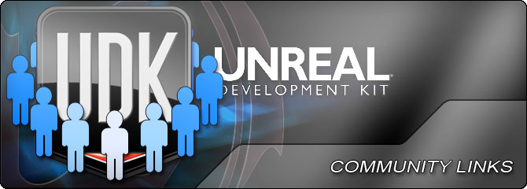

UDN
Search public documentation:
UDKCommunityLinksKR
English Translation
日本語訳
中国翻译
Interested in the Unreal Engine?
Visit the Unreal Technology site.
Looking for jobs and company info?
Check out the Epic games site.
Questions about support via UDN?
Contact the UDN Staff
日本語訳
中国翻译
Interested in the Unreal Engine?
Visit the Unreal Technology site.
Looking for jobs and company info?
Check out the Epic games site.
Questions about support via UDN?
Contact the UDN Staff
UE3 홈 > UDK 커뮤니티 링크
UDK 커뮤니티 링크

- IndieDB - 언리얼 개발 키트(UDK) 사용 프로젝트 관련 정보 보관소입니다.
- UDKDev.net - UDK 개발자용 커뮤니티 운영 폴란드어 포럼입니다.
- Magic Stone Studios - UDK 웨폰 제작 튜토리얼입니다.
- UnrealEs - 스페인어 UDK 튜토리얼.
- Chris Albeluhn - 컨셉, 애셋 제작, UDK 관련 튜토리얼이 수록된 개인 홈페이지입니다.
- thenewboston Education - UDK 초보자 시리즈 비디오 65 편 입니다.
- Hourences.com - 엄청난 튜토리얼 다수, Creating a Basic UDK Game 포함
- MoziDesign.com - 레벨 디자인 튜토리얼.
- Raven67854 YouTube UDK 비디오 튜토리얼
- BeyondUnreal UDK Wiki - BeyondUnreal의 UDK 위키, UDK API 문서 포함
- 플로우 맵 만들고 사용하기 - 플로우 맵을 사용하여 수면 머티리얼 만들기
- UE3 에디터 배우기 - UE3 에디터의 기본기에 대한 안내
- chrisalbeluhn.com - 3D 아트 및 UDK 튜토리얼
- UnrealDB - UDK 튜토리얼 검색용 리소스
- Seek and destroy games 비디오 튜토리얼 - UDK 의 다양한 면을 다루는 345 개 이상의 튜토리얼
- http://romerounrealscript.blogspot.com/ - 언리얼스크립트 튜토리얼
- Okita.com - 언리얼스크립트용 초보자용 튜토리얼 포함 입문 튜토리얼
- moug-portfolio.info - 언리얼스크립트 입문 튜토리얼
- UT40K_Mod UDK 비디오 튜토리얼
- ModDB 언리얼 엔진 3 튜토리얼
- Isometric(등축도법) 카메라 튜토리얼 - 경로 찾기 포함 isometric(등축도법) 카메라 생성에 대한 기초부터 다룬 튜토리얼
- Trendy Entertainment 제공 YouTube UDK 비디오 튜토리얼 채널
- Allar의 UDK 튜토리얼 - 언리얼스크립트 입문 및 UDK로 스케일폼 UI 제작 입문
- CityEngine 및 UDK 튜토리얼 - CityEngine을 사용하여 만든 도시 씬을 UDK에 가져오는 법 안내
- 커스텀 NPC 기본 튜토리얼 - 커스텀 NPC를 UDK에 가져오기
- HUD 생성 튜토리얼 - 언리얼스크립트를 사용한 HUD(Heads Up Display) 제작하는 법 안내. 영어/불어 버전.
- daveprout.com - UDK 라이팅과 머티리얼 튜토리얼
- stephenjameson.com - UDK 라이팅, 이펙트, 머티리얼 튜토리얼
- teadster.com - Cloth 튜토리얼
- michaeljcollinsdreamart.com - UDK 콘텐츠 튜토리얼
- UnderGround Education - 3D 아트 및 UDK 튜토리얼
- JarlanPerez.com - UDK 라이트 매핑 튜토리얼
- 3DBuzz - UDK용 뛰어난 비디오 튜토리얼 다수
- rdgree.net - UE3 텍스처에서 머티리얼까지
에픽은 아래에 링크된 제품에 대해 보증하지 않습니다.
- Eat3D.com 트레이닝 비디오 UDK 포함 Eat3D.com 비디오 - 소개와 적용 (UDK 라이팅, 포스트-프로세싱 등 처음부터 끝까지 만들어 보기)
- UDK - 소개와 적용 - 맨땅에서 (실내 및 실외) 환경 전체 제작을 다루는 Eat3d.com 제공 4시간 비디오.
- UDK로의 소개 - EA CG 관리자 Waylon Brink 제작, UDK 핵심 기능 입문에 도움이 되는 DVD
- 언리얼 개발 키트: 머티리얼 - 알파, 투명, 블렌딩에서 벡터까지에 대한 모든 것.
- 3D Motive - UDK 및 언리얼 테크놀러지를 다루는 풀 HD 고품질 비디오 튜토리얼 제공 - 무료 및 유료 콘텐츠.
- Contagion Entertainment UDK 튜토리얼 - 일부 무료, 일부 유료 튜토리얼
- UDK 레벨 디자인 11일 완성 - UDK를 사용하여 11일만에 처음부터 끝까지 제대로 플레이가능한 맵 만들기
- Passion3D.com - 불어 UDK 비디오 튜토리얼.
- UDK IDE - UDK 와 UnrealScript 로 프로그래밍 작업을 하시는 분들을 위한 통합 개발 환경입니다.
- UE3 툴 - 여러가지 환경설정으로 UDK 를 빠르게 실행시키기 위한 툴입니다.
- The Dunebox™ UDK Chronicles - 기존 UnrealScript 클래스를 확장하는 커스텀 클래스를 빠르게 만들 수 있는 툴
- UDK 레이아웃 툴 - 오브젝트 배열을 빠르게 놓을 수 있는 툴
- UDK 프론트엔드 - Frontend 추가 환경설정 및 쿠킹 옵션 포함 고급 설정
- UDK DLLBind 임베디드 데이터베이스(SQLIte) - 데이터베이스 함수성을 추가시켜 주는 프레임워크
- UnScripter - 언리얼스크립트 및 UDK용 단순 IDE
- 배치 파일 백업 - 프로젝트 데이터를 쉽게 백업하기 위한 배치 파일
- 레이아웃 스타터 키트 - 레이아웃 플레이스홀더 텍스처와 플레이어 모델
- UDK 전송 유틸리티 - 프로젝트를 새로운 UDK 설치파일로 전송하기 위한 유틸리티.
- Notepad++ 언리얼스크립트 지원 - Notepad++ 용 언리얼스크립트 문법 강조기 및 자동완성 기능.